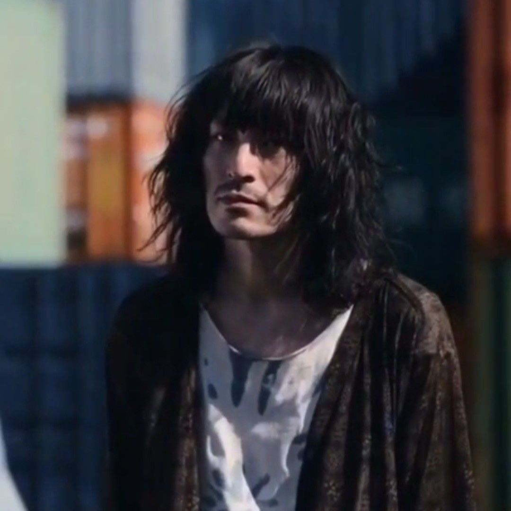

Three of Clubs, also known as Dead or Alive, is a game featured in Episode 1 of Alice in Borderland. Players have to find their way out of the building by choosing the correct door in each room with limited time. There are two doors in each room - one marked with "Live" (生) and the other marked "Die" (死). One door leads to the next room while the other door leads to instant death. Players must choose wisely to survive and progress through the game.
The game venue is a GM Building. All players must enter the elevator, and the game starts when all players enter the first room. The correct door per room depends on the area and structure of the building. Entering the wrong room results in death via laser.


Distance is a game featured in Episode 4 of Alice in Borderland. The players start the game on a bus, and from there they have to reach the "GOAL." Players are not instructed about the GOAL's location and the means to reach it. However, the venue implies that they have to run across the underground tunnel with dangers along their way.
The game venue is a highway tunnel. Phones are provided with a counter showing the distance from the GOAL. Players must keep moving towards the GOAL before the time runs out. Along the way, there are obstacles such as darkness, unsafe water, and a wild black panther that the players must overcome.


Click on any character to reveal their fate.


